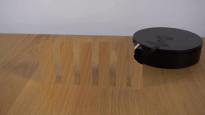
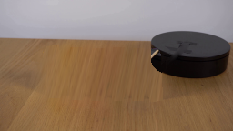

← Smoke 总览
0035
GPT-6.1-Sol · vision-agent · 256×144 · 20 frames / 4 fps
当前任务输入Static locked-off single-shot with fixed frame throughout filmed with constant framerate in real-time. The scene shows a realistic scientific demonstration. The scene only contains the described setup and actions. A row of colorful wooden blocks has been lined up on a wooden table next to a black platform. The wooden stick attached to the black platform rotates clockwise and hits the first block.
最终视频
生成代码 · 输入与输出契约
保存的候选：4 · output tokens：11166 · reasoning output tokens：6048 · 耗时：311s
完整工具调用与实际返回图片
完整rollout记录13次顶层工具调用，向模型返回2张图片。嵌套工具名来自调用代码；下面图片来自匹配call_id的实际工具输出，区别于模型自述。
exec · exec_command · 0张返回图片
call_FjD5iyPHre22lEEufmKKILGn · 调用 2026-11-06T19:19:53.660Z → 返回 2026-11-06T19:19:53.870Z
const r = await tools.exec_command({cmd:"pwd && rg --files -g 'prompt.txt' -g 'GENERATION_RULES.md' -g 'first_frame.png' -g 'AGENTS.md' -g '*.py' -g 'pyproject.toml'","max_output_tokens":4000});text(r.output);
text(ALL_TOOLS.filter(x=>/image|video/.test(x.name+" "+x.description)).map(x=>({name:x.name,description:x.description.slice(0,160)})));
exec · exec_command · 0张返回图片
call_ui4eXMpPOgy0u4bKtRYO2JHu · 调用 2026-11-06T19:19:56.314Z → 返回 2026-11-06T19:19:56.526Z
text(await tools.exec_command({cmd:"ls -la; cat prompt.txt GENERATION_RULES.md","max_output_tokens":8000}));
exec · exec_command, view_image · 0张返回图片
call_iTqboNQPnswRmEkU1gY9AJTN · 调用 2026-11-06T19:20:01.920Z → 返回 2026-11-06T19:20:02.438Z
const results=await Promise.allSettled([tools.exec_command({cmd:"cat task_spec.json artifact_io.py; python - <<'PY'\nfrom PIL import Image\nim=Image.open('first_frame.png');print(im.size)\nim.resize((1024,576)).save('.tmp/first_large.png')\nPY","max_output_tokens":6000}),tools.exec_command({cmd:"python - <<'PY'\nimport importlib.util\nfor x in ['numpy','PIL','cv2','scipy']:\n print(x, bool(importlib.util.find_spec(x)))\nPY","max_output_tokens":1000})]);for(let r of results)text(r);
image((await tools.view_image({path:"workspace/.tmp/first_large.png"})).image_url);
exec · exec_command, view_image · 0张返回图片
call_qtbQHoC5sQtI2oHbeYAtlPU4 · 调用 2026-11-06T19:21:01.165Z → 返回 2026-11-06T19:21:01.679Z
text(await tools.exec_command({cmd:"python - <<'PY'\nfrom PIL import Image\nim=Image.open('first_frame.png')\nim.crop((40,45,185,116)).resize((1015,497)).save('.tmp/blocks.png')\nPY","max_output_tokens":1000}));
image((await tools.view_image({path:"workspace/.tmp/blocks.png"})).image_url);
exec · exec_command · 0张返回图片
call_zOSpSnj9xPGf60s9gsrHXvnZ · 调用 2026-11-06T19:22:18.363Z → 返回 2026-11-06T19:22:28.556Z
text(await tools.exec_command({cmd:"cat > generate.py <<'PY'\nfrom pathlib import Path\nimport math\nimport numpy as np\nimport cv2\nfrom PIL import Image, ImageDraw\nfrom artifact_io import save\n\nROOT = Path(__file__).resolve().parent\nSOURCE = np.asarray(Image.open(ROOT / 'first_frame.png').convert('RGB'))\nS = 4\nW,H=256,144\n# Coordinates of the actual painted faces in the supplied still.\nBLOCKS=[\n {'front':[(54,106),(64,106),(59,58),(48,59)], 'depth':(4,-7), 'start':1.75},\n {'front':[(79,108),(89,108),(87,59),(76,59)], 'depth':(2,-6), 'start':1.50},\n {'front':[(101,109),(111,109),(111,61),(100,61)], 'depth':(2,-7), 'start':1.25},\n {'front':[(124,109),(134,109),(134,60),(124,60)], 'depth':(1,-7), 'start':1.00},\n {'front':[(146,109),(156,109),(157,60),(147,60)], 'depth':(0,-6), 'start':.75},\n {'front':[(166,110),(177,109),(175,61),(164,61)], 'depth':(-2,-6), 'start':.50},\n]\n\ndef polygon_mask(points, shape=(H*S,W*S)):\n m=np.zeros(shape,np.uint8)\n cv2.fillPoly(m,[np.rint(np.array(points)*S).astype(np.int32)],255,lineType=cv2.LINE_AA)\n return m\n\n# Recover the small occluded portions of the stationary table and platform.\nmask=np.zeros((H,W),np.uint8)\nfor b in BLOCKS:\n f=np.array(b['front'],np.float32); d=np.array(b['depth'])\n hull=cv2.convexHull(np.vstack([f,f+d]).astype(np.float32)).astype(np.int32)\n cv2.fillConvexPoly(mask,hull,255)\nmask=cv2.dilate(mask,np.ones((3,3),np.uint8))\ncv2.line(mask,(175,77),(205,49),255,5)\nbackground=cv2.inpaint(SOURCE,mask,7,cv2.INPAINT_TELEA)\n# Source-derived wood texture under the removed upright blocks; an affine\n# table-plane mapping continues the grain from a clear part of the same still.\nyy,xx=np.mgrid[:H,:W].astype(np.float32)\ntexture=cv2.remap(SOURCE, np.clip(xx+(yy-122)*.18,0,255),np.clip(121+(yy-60)*.28,115,142),cv2.INTER_LINEAR)\nwood_mask=mask.copy()\n# The circular platform is fixed. Restore its silhouette where the purple\n# block previously hid it, using colors sampled on its unobstructed surface.\nplatform=np.zeros((H,W),np.uint8)\ncv2.ellipse(platform,(209,49),(44,15),3,0,360,255,-1)\ncv2.ellipse(platform,(209,69),(42,17),0,0,180,255,-1)\ncv2.rectangle(platform,(168,50),(249,69),255,-1)\n# Better approximation of the left cylindrical wall.\ncv2.fillPoly(platform,[np.array([(166,51),(169,67),(175,77),(187,82),(209,86),(235,82),(248,73),(251,55)],np.int32)],255)\nplatform=cv2.GaussianBlur(platform,(3,3),.45)\nfor y in range(48,115):\n for x in range(40,182):\n if mask[y,x]:\n if platform[y,x]>128 and x>=165 and y<85:\n background[y,x]=SOURCE[y,min(255,x+24)]\n else:\n background[y,x]=texture[y,x]\n# Blend boundaries inside the cleanup mask, and clear the original stationary\n# contact shadows that would otherwise remain after the blocks fell.\nshadow_region=np.zeros((H,W),np.uint8)\ncv2.ellipse(shadow_region,(115,105),(69,12),0,0,360,255,-1)\nshadow_region=cv2.GaussianBlur(shadow_region,(13,13),4)\nshadow_region=(shadow_region.astype(np.float32)/255*.64)*(1-platform.astype(np.float32)/255)\nbackground=(background*(1-shadow_region[...,None])+texture*shadow_region[...,None]).astype(np.uint8)\nBG=cv2.resize(background,(W*S,H*S),interpolation=cv2.INTER_CUBIC).astype(np.float32)\nSRC=cv2.resize(SOURCE,(W*S,H*S),interpolation=cv2.INTER_CUBIC).astype(np.float32)\n\n# Texture patches are all measured from the six original painted blocks.\ndef face(canvas, src_points, dst_points, tone=1.0):\n src=np.array(src_points,np.float32)*S; dst=np.array(dst_points,np.float32)*S\n if abs(cv2.contourArea(dst)) < .4: return\n M=cv2.getPerspectiveTransform(src,dst)\n warped=cv2.warpPerspective(SRC,M,(W*S,H*S),flags=cv2.INTER_LINEAR,borderMode=cv2.BORDER_REPLICATE)\n alpha=polygon_mask(dst_points).astype(np.float32)/255\n # Supersampling preserves a soft photographic edge at the final size.\n canvas[:]=canvas*(1-alpha[...,None])+np.clip(warped*tone,0,255)*alpha[...,None]\n\n\ndef transformed(b, angle):\n f=np.array(b['front'],np.float32)\n p=f[0]; c,s=np.cos(angle),np.sin(angle)\n out=f.copy()\n u=np.array([0,1,1,0],np.float32)\n width=f[1,0]-f[0,0]\n out[:,0]=p[0]+(f[:,0]-p[0])*c+(f[:,1]-p[1])*s\n out[:,1]=p[1]+(f[:,1]-p[1])*c-u*width*s\n return out\n\n\ndef angle_at(t,b,index):\n u=(t-b['start'])/.57\n if u<=0: return 0.\n # A short accelerating fall, then contact with the table or the preceding\n # fallen block. Overlap determines the slightly raised resting angles.\n final=math.radians(89 if index==0 else 77.0)\n if u<1:\n return final*(u*u*(3-2*u))\n return final + math.radians(1.8)*math.exp(-(u-1)*6)*math.sin((u-1)*13)\n\n\ndef draw_stick(canvas,t):\n pivot=np.array([204.,49.])\n theta=2.215 + t*.50\n tip=pivot+np.array([47.5*math.cos(theta),35.0*math.sin(theta)])\n start=pivot+.24*(tip-pivot)\n # Thin cast shadow, offset in the same direction as the source lighting.\n layer=np.zeros((H*S,W*S),np.float32)\n cv2.line(layer,tuple(np.rint((start+[2,3])*S).astype(int)),tuple(np.rint((tip+[2,3])*S).astype(int)),.21,3*S,cv2.LINE_AA)\n layer=cv2.GaussianBlur(layer,(11,11),2.3)\n canvas*=1-layer[...,None]\n p0=tuple(np.rint(start*S).astype(int)); p1=tuple(np.rint(tip*S).astype(int))\n cv2.line(canvas,p0,p1,(116,87,48),int(2.3*S),cv2.LINE_AA)\n cv2.line(canvas,p0,p1,(192,165,109),int(1.6*S),cv2.LINE_AA)\n off=np.array([-.4,-.5])\n cv2.line(canvas,tuple(np.rint((start+off)*S).astype(int)),tuple(np.rint((tip+off)*S).astype(int)),(212,190,141),int(.55*S),cv2.LINE_AA)\n cv2.line(canvas,tuple(np.rint(pivot*S).astype(int)),p0,(35,34,34),int(2.2*S),cv2.LINE_AA)\n cv2.ellipse(canvas,tuple(np.rint(pivot*S).astype(int)),(4*S,int(1.6*S)),0,0,360,(46,45,46),-1,cv2.LINE_AA)\n\n\ndef render(t):\n canvas=BG.copy()\n angles=[angle_at(t,b,i) for i,b in enumerate(BLOCKS)]\n # Directly drawn soft shadows follow the bottom and descending upper end.\n shadow=np.zeros((H*S,W*S),np.float32)\n for b,a in zip(BLOCKS,angles):\n f=transformed(b,a)\n foot=np.array(b['front'][:2],np.float32)\n top=f[2:]\n s=np.array([foot[0]+[3,0],foot[1]+[12,-1],top[0]+[11,7+20*np.cos(a)],top[1]+[3,7+20*np.cos(a)]])\n cv2.fillPoly(shadow,[np.rint(s*S).astype(np.int32)],.21,cv2.LINE_AA)\n q=np.vstack([f,f+np.array(b['depth'])])\n # Table projection of the body, with a compact contact shadow.\n q[:,1]=np.maximum(102,q[:,1])+2\n hull=cv2.convexHull(q.astype(np.float32))\n cv2.fillConvexPoly(shadow,np.rint(hull*S).astype(np.int32),.22,cv2.LINE_AA)\n shadow=cv2.GaussianBlur(shadow,(25,25),5)\n canvas*=1-shadow[...,None]\n draw_stick(canvas,t)\n # The rear object is painted first; the descending blocks overlap like\n # solid wooden pieces instead of transparent sprites.\n for i in range(5,-1,-1):\n b=BLOCKS[i];a=angles[i]\n f=np.array(b['front'],np.float32);d=np.array(b['depth'],np.float32)\n q=transformed(b,a)\n # Top end grain.\n face(canvas,[f[3],f[2],f[2]+d,f[3]+d],[q[3],q[2],q[2]+d,q[3]+d],1-.12*np.sin(a))\n # The right narrow face becomes the upper broad face during a fall.\n right=d[0]*np.cos(a)-d[1]*np.sin(a)>0\n if right:\n srcside=[f[1],f[1]+d,f[2]+d,f[2]]\n if d[0]<=.6:\n # This face was hidden at time zero, so use the same block's\n # front wood texture for the newly exposed surface.\n srcside=[f[0],f[1],f[2],f[3]]\n shade=1.05+.17*np.sin(a)\n else:\n shade=1+.32*np.sin(a)\n face(canvas,srcside,[q[1],q[1]+d,q[2]+d,q[2]],shade)\n else:\n face(canvas,[f[0],f[3],f[3]+d,f[0]+d],[q[0],q[3],q[3]+d,q[0]+d],1)\n face(canvas,f,q,1-.07*np.sin(a))\n return np.clip(cv2.resize(canvas,(W,H),interpolation=cv2.INTER_AREA),0,255).astype(np.uint8)\n\nframes=np.stack([SOURCE.copy() if k==0 else render(k/4) for k in range(20)])\n# Keep the first candidate so subsequent inspection never destroys its history.\nnp.savez_compressed(ROOT/'candidate_01.npz',frames=frames)\nsave(frames,ROOT)\nImage.fromarray(background).save(ROOT/'.tmp/background.png')\nprint('Saved',frames.shape,frames.dtype,'first frame exact:',np.array_equal(frames[0],SOURCE))\nPY\npython generate.py","yield_time_ms":10000,"max_output_tokens":1000}));
exec · write_stdin · 0张返回图片
call_zUWVtx8nkaWdngX08iBLoZol · 调用 2026-11-06T19:22:31.944Z → 返回 2026-11-06T19:22:31.994Z
text(await tools.write_stdin({session_id:75137,chars:"","yield_time_ms":1000,"max_output_tokens":1000}));
exec · view_image · 1张返回图片
call_aiIjY4oSkAnhktbt6fLcRNRG · 调用 2026-11-06T19:22:36.430Z → 返回 2026-11-06T19:22:36.515Z
for (const name of ["inspection.png",".tmp/background.png","transition_check.png"]) image((await tools.view_image({path:"workspace/"+name})).image_url);

返回图片SHA 67342bac928be2a0
exec · exec_command · 0张返回图片
call_b0ty6PPcW1ArcGWfvT9QCbeO · 调用 2026-11-06T19:23:25.871Z → 返回 2026-11-06T19:23:27.069Z
text(await tools.exec_command({cmd:"cp generate.py candidate_01.py\npython - <<'PY'\np='generate.py'\ns=open(p).read()\na=s.index('# Blend boundaries inside')\nz=s.index('BG=cv2.resize',a)\ns=s[:a]+'''# Continue one contiguous patch of table grain, with a feathered boundary.\n# Using a common patch avoids silhouettes at the vacated block locations.\nreplacement=np.zeros((H,W),np.uint8)\ncv2.rectangle(replacement,(43,50),(179,112),255,-1)\nreplacement=cv2.GaussianBlur(replacement,(25,25),7).astype(np.float32)/255\nreplacement=np.maximum(replacement,mask.astype(np.float32)/255)\n# The fixed black fixture sits in front of this table patch.\nplatform=np.zeros((H,W),np.uint8)\ncv2.ellipse(platform,(209,49),(44,15),3,0,360,255,-1)\ncv2.rectangle(platform,(166,49),(251,68),255,-1)\ncv2.ellipse(platform,(209,68),(42,17),0,0,180,255,-1)\nplatform=cv2.GaussianBlur(platform,(3,3),.45)\nreplacement*=1-platform.astype(np.float32)/255\nbackground=(background*(1-replacement[...,None])+texture*replacement[...,None]).astype(np.uint8)\n# Reconstruct only the occluded sliver of the platform from the same still.\nfor y in range(48,86):\n for x in range(163,182):\n if mask[y,x] and platform[y,x]>128:\n background[y,x]=SOURCE[y,min(255,x+24)]\n''' + s[z:]\ns=s.replace(\"np.savez_compressed(ROOT/'candidate_01.npz',frames=frames)\",\"np.savez_compressed(ROOT/'candidate_02.npz',frames=frames)\")\nopen(p,'w').write(s)\nPY\npython generate.py","yield_time_ms":1000,"max_output_tokens":1000}));
exec · write_stdin · 0张返回图片
call_87KdDU4mk0CRf5fh5kmo8Qq3 · 调用 2026-11-06T19:23:32.728Z → 返回 2026-11-06T19:23:37.510Z
text(await tools.write_stdin({session_id:81240,chars:"","yield_time_ms":1000,"max_output_tokens":1000}));
exec · view_image · 1张返回图片
call_dOGYdTetWpLfF77wOGaUOmSu · 调用 2026-11-06T19:23:43.066Z → 返回 2026-11-06T19:23:43.128Z
image((await tools.view_image({path:"workspace/inspection.png"})).image_url);
image((await tools.view_image({path:"workspace/.tmp/background.png"})).image_url);

返回图片SHA 523d359c43104fa2
exec · exec_command · 0张返回图片
call_9Yafm6FkfRx4YkZyBaXT9cST · 调用 2026-11-06T19:24:18.365Z → 返回 2026-11-06T19:24:19.552Z
text(await tools.exec_command({cmd:"cp generate.py candidate_02.py\npython - <<'PY'\np='generate.py';s=open(p).read()\ns=s.replace(\"'start':1.75\", \"'start':1.50\").replace(\"'start':1.50},\\n {'front':[(101\", \"'start':1.30},\\n {'front':[(101\")\ns=s.replace(\"'start':1.25\", \"'start':1.10\").replace(\"'start':1.00\", \"'start':.90\").replace(\"'start':.75\", \"'start':.70\")\ns=s.replace('background=cv2.inpaint(SOURCE,mask,7,cv2.INPAINT_TELEA)','clean_source=cv2.inpaint(SOURCE,mask,7,cv2.INPAINT_TELEA)\\nbackground=clean_source.copy()')\ns=s.replace('background[y,x]=SOURCE[y,min(255,x+24)]','background[y,x]=clean_source[y,min(255,x+24)]')\ns=s.replace(\"(t-b['start'])/.57\", \"(t-b['start'])/.72\")\ns=s.replace(\"ROOT/'candidate_02.npz'\", \"ROOT/'candidate_03.npz'\")\nopen(p,'w').write(s)\nPY\npython generate.py","yield_time_ms":1000,"max_output_tokens":1000}));
exec · exec_command, write_stdin · 0张返回图片
call_IqMgdKHjkUurjCegOILyW5l1 · 调用 2026-11-06T19:24:25.432Z → 返回 2026-11-06T19:24:29.546Z
text(await tools.exec_command({cmd:"command -v ffmpeg; sed -n '12,25p' generate.py","max_output_tokens":1000}));
text(await tools.write_stdin({session_id:58952,chars:"","yield_time_ms":1000,"max_output_tokens":1000}));
exec · exec_command, view_image · 0张返回图片
call_9Mo1Dpa7vMc6fzaSPKsazZHs · 调用 2026-11-06T19:24:39.759Z → 返回 2026-11-06T19:24:40.496Z
image((await tools.view_image({path:"workspace/inspection.png"})).image_url);
text(await tools.exec_command({cmd:"python - <<'PY'\nfrom pathlib import Path\nimport json\nimport numpy as np\nfrom PIL import Image\np=Path('.')\nspec=json.loads((p/'task_spec.json').read_text())\na=np.load(p/'candidate_03.npz')['frames']\nb=np.load(p/'pixels.npz')['pixels']\nassert a.shape==(20,144,256,3) and a.dtype==np.uint8\nassert b.shape==(144,256,20)\nassert np.array_equal(a[0],np.array(Image.open('first_frame.png').convert('RGB')))\npacked=(a.astype(np.uint32)[...,0]<<16)|(a.astype(np.uint32)[...,1]<<8)|a.astype(np.uint32)[...,2]\nassert np.array_equal(b,packed.transpose(1,2,0))\nassert len(list((p/'frames').glob('*.png')))==20\nprint('Verified: 20 RGB frames, 256 x 144, 4 fps, 5 seconds; first frame pixel-identical.')\nprint('Player:',(p/'index.html').stat().st_size,'bytes')\nprint('RGB tensor:',(p/'pixels.npz').stat().st_size,'bytes')\nPY","max_output_tokens":1000}));
逐轮生成与修改
候选由外部harness保存，工具证据以实际保留的记录范围为准。
Candidate 1
2026-11-06T19:22:30.415045+00:00 · RGB hash 45bc89646541771f

本轮代码修改
--- previous
+++ current
@@ -0,0 +1,168 @@
+from pathlib import Path
+import math
+import numpy as np
+import cv2
+from PIL import Image, ImageDraw
+from artifact_io import save
+
+ROOT = Path(__file__).resolve().parent
+SOURCE = np.asarray(Image.open(ROOT / 'first_frame.png').convert('RGB'))
+S = 4
+W,H=256,144
+# Coordinates of the actual painted faces in the supplied still.
+BLOCKS=[
+ {'front':[(54,106),(64,106),(59,58),(48,59)], 'depth':(4,-7), 'start':1.75},
+ {'front':[(79,108),(89,108),(87,59),(76,59)], 'depth':(2,-6), 'start':1.50},
+ {'front':[(101,109),(111,109),(111,61),(100,61)], 'depth':(2,-7), 'start':1.25},
+ {'front':[(124,109),(134,109),(134,60),(124,60)], 'depth':(1,-7), 'start':1.00},
+ {'front':[(146,109),(156,109),(157,60),(147,60)], 'depth':(0,-6), 'start':.75},
+ {'front':[(166,110),(177,109),(175,61),(164,61)], 'depth':(-2,-6), 'start':.50},
+]
+
+def polygon_mask(points, shape=(H*S,W*S)):
+ m=np.zeros(shape,np.uint8)
+ cv2.fillPoly(m,[np.rint(np.array(points)*S).astype(np.int32)],255,lineType=cv2.LINE_AA)
+ return m
+
+# Recover the small occluded portions of the stationary table and platform.
+mask=np.zeros((H,W),np.uint8)
+for b in BLOCKS:
+ f=np.array(b['front'],np.float32); d=np.array(b['depth'])
+ hull=cv2.convexHull(np.vstack([f,f+d]).astype(np.float32)).astype(np.int32)
+ cv2.fillConvexPoly(mask,hull,255)
+mask=cv2.dilate(mask,np.ones((3,3),np.uint8))
+cv2.line(mask,(175,77),(205,49),255,5)
+background=cv2.inpaint(SOURCE,mask,7,cv2.INPAINT_TELEA)
+# Source-derived wood texture under the removed upright blocks; an affine
+# table-plane mapping continues the grain from a clear part of the same still.
+yy,xx=np.mgrid[:H,:W].astype(np.float32)
+texture=cv2.remap(SOURCE, np.clip(xx+(yy-122)*.18,0,255),np.clip(121+(yy-60)*.28,115,142),cv2.INTER_LINEAR)
+wood_mask=mask.copy()
+# The circular platform is fixed. Restore its silhouette where the purple
+# block previously hid it, using colors sampled on its unobstructed surface.
+platform=np.zeros((H,W),np.uint8)
+cv2.ellipse(platform,(209,49),(44,15),3,0,360,255,-1)
+cv2.ellipse(platform,(209,69),(42,17),0,0,180,255,-1)
+cv2.rectangle(platform,(168,50),(249,69),255,-1)
+# Better approximation of the left cylindrical wall.
+cv2.fillPoly(platform,[np.array([(166,51),(169,67),(175,77),(187,82),(209,86),(235,82),(248,73),(251,55)],np.int32)],255)
+platform=cv2.GaussianBlur(platform,(3,3),.45)
+for y in range(48,115):
+ for x in range(40,182):
+ if mask[y,x]:
+ if platform[y,x]>128 and x>=165 and y<85:
+ background[y,x]=SOURCE[y,min(255,x+24)]
+ else:
+ background[y,x]=texture[y,x]
+# Blend boundaries inside the cleanup mask, and clear the original stationary
+# contact shadows that would otherwise remain after the blocks fell.
+shadow_region=np.zeros((H,W),np.uint8)
+cv2.ellipse(shadow_region,(115,105),(69,12),0,0,360,255,-1)
+shadow_region=cv2.GaussianBlur(shadow_region,(13,13),4)
+shadow_region=(shadow_region.astype(np.float32)/255*.64)*(1-platform.astype(np.float32)/255)
+background=(background*(1-shadow_region[...,None])+texture*shadow_region[...,None]).astype(np.uint8)
+BG=cv2.resize(background,(W*S,H*S),interpolation=cv2.INTER_CUBIC).astype(np.float32)
+SRC=cv2.resize(SOURCE,(W*S,H*S),interpolation=cv2.INTER_CUBIC).astype(np.float32)
+
+# Texture patches are all measured from the six original painted blocks.
+def face(canvas, src_points, dst_points, tone=1.0):
+ src=np.array(src_points,np.float32)*S; dst=np.array(dst_points,np.float32)*S
+ if abs(cv2.contourArea(dst)) < .4: return
+ M=cv2.getPerspectiveTransform(src,dst)
+ warped=cv2.warpPerspective(SRC,M,(W*S,H*S),flags=cv2.INTER_LINEAR,borderMode=cv2.BORDER_REPLICATE)
+ alpha=polygon_mask(dst_points).astype(np.float32)/255
+ # Supersampling preserves a soft photographic edge at the final size.
+ canvas[:]=canvas*(1-alpha[...,None])+np.clip(warped*tone,0,255)*alpha[...,None]
+
+
+def transformed(b, angle):
+ f=np.array(b['front'],np.float32)
+ p=f[0]; c,s=np.cos(angle),np.sin(angle)
+ out=f.copy()
+ u=np.array([0,1,1,0],np.float32)
+ width=f[1,0]-f[0,0]
+ out[:,0]=p[0]+(f[:,0]-p[0])*c+(f[:,1]-p[1])*s
+ out[:,1]=p[1]+(f[:,1]-p[1])*c-u*width*s
+ return out
+
+
+def angle_at(t,b,index):
+ u=(t-b['start'])/.57
+ if u<=0: return 0.
+ # A short accelerating fall, then contact with the table or the preceding
+ # fallen block. Overlap determines the slightly raised resting angles.
+ final=math.radians(89 if index==0 else 77.0)
+ if u<1:
+ return final*(u*u*(3-2*u))
+ return final + math.radians(1.8)*math.exp(-(u-1)*6)*math.sin((u-1)*13)
+
+
+def draw_stick(canvas,t):
+ pivot=np.array([204.,49.])
+ theta=2.215 + t*.50
+ tip=pivot+np.array([47.5*math.cos(theta),35.0*math.sin(theta)])
+ start=pivot+.24*(tip-pivot)
+ # Thin cast shadow, offset in the same direction as the source lighting.
+ layer=np.zeros((H*S,W*S),np.float32)
+ cv2.line(layer,tuple(np.rint((start+[2,3])*S).astype(int)),tuple(np.rint((tip+[2,3])*S).astype(int)),.21,3*S,cv2.LINE_AA)
+ layer=cv2.GaussianBlur(layer,(11,11),2.3)
+ canvas*=1-layer[...,None]
+ p0=tuple(np.rint(start*S).astype(int)); p1=tuple(np.rint(tip*S).astype(int))
+ cv2.line(canvas,p0,p1,(116,87,48),int(2.3*S),cv2.LINE_AA)
+ cv2.line(canvas,p0,p1,(192,165,109),int(1.6*S),cv2.LINE_AA)
+ off=np.array([-.4,-.5])
+ cv2.line(canvas,tuple(np.rint((start+off)*S).astype(int)),tuple(np.rint((tip+off)*S).astype(int)),(212,190,141),int(.55*S),cv2.LINE_AA)
+ cv2.line(canvas,tuple(np.rint(pivot*S).astype(int)),p0,(35,34,34),int(2.2*S),cv2.LINE_AA)
+ cv2.ellipse(canvas,tuple(np.rint(pivot*S).astype(int)),(4*S,int(1.6*S)),0,0,360,(46,45,46),-1,cv2.LINE_AA)
+
+
+def render(t):
+ canvas=BG.copy()
+ angles=[angle_at(t,b,i) for i,b in enumerate(BLOCKS)]
+ # Directly drawn soft shadows follow the bottom and descending upper end.
+ shadow=np.zeros((H*S,W*S),np.float32)
+ for b,a in zip(BLOCKS,angles):
+ f=transformed(b,a)
+ foot=np.array(b['front'][:2],np.float32)
+ top=f[2:]
+ s=np.array([foot[0]+[3,0],foot[1]+[12,-1],top[0]+[11,7+20*np.cos(a)],top[1]+[3,7+20*np.cos(a)]])
+ cv2.fillPoly(shadow,[np.rint(s*S).astype(np.int32)],.21,cv2.LINE_AA)
+ q=np.vstack([f,f+np.array(b['depth'])])
+ # Table projection of the body, with a compact contact shadow.
+ q[:,1]=np.maximum(102,q[:,1])+2
+ hull=cv2.convexHull(q.astype(np.float32))
+ cv2.fillConvexPoly(shadow,np.rint(hull*S).astype(np.int32),.22,cv2.LINE_AA)
+ shadow=cv2.GaussianBlur(shadow,(25,25),5)
+ canvas*=1-shadow[...,None]
+ draw_stick(canvas,t)
+ # The rear object is painted first; the descending blocks overlap like
+ # solid wooden pieces instead of transparent sprites.
+ for i in range(5,-1,-1):
+ b=BLOCKS[i];a=angles[i]
+ f=np.array(b['front'],np.float32);d=np.array(b['depth'],np.float32)
+ q=transformed(b,a)
+ # Top end grain.
+ face(canvas,[f[3],f[2],f[2]+d,f[3]+d],[q[3],q[2],q[2]+d,q[3]+d],1-.12*np.sin(a))
+ # The right narrow face becomes the upper broad face during a fall.
+ right=d[0]*np.cos(a)-d[1]*np.sin(a)>0
+ if right:
+ srcside=[f[1],f[1]+d,f[2]+d,f[2]]
+ if d[0]<=.6:
+ # This face was hidden at time zero, so use the same block's
+ # front wood texture for the newly exposed surface.
+ srcside=[f[0],f[1],f[2],f[3]]
+ shade=1.05+.17*np.sin(a)
+ else:
+ shade=1+.32*np.sin(a)
+ face(canvas,srcside,[q[1],q[1]+d,q[2]+d,q[2]],shade)
+ else:
+ face(canvas,[f[0],f[3],f[3]+d,f[0]+d],[q[0],q[3],q[3]+d,q[0]+d],1)
+ face(canvas,f,q,1-.07*np.sin(a))
+ return np.clip(cv2.resize(canvas,(W,H),interpolation=cv2.INTER_AREA),0,255).astype(np.uint8)
+
+frames=np.stack([SOURCE.copy() if k==0 else render(k/4) for k in range(20)])
+# Keep the first candidate so subsequent inspection never destroys its history.
+np.savez_compressed(ROOT/'candidate_01.npz',frames=frames)
+save(frames,ROOT)
+Image.fromarray(background).save(ROOT/'.tmp/background.png')
+print('Saved',frames.shape,frames.dtype,'first frame exact:',np.array_equal(frames[0],SOURCE))Candidate 2
2026-11-06T19:23:38.274569+00:00 · RGB hash 1a1862921b56e273

本轮代码修改
--- previous
+++ current
@@ -54,13 +54,25 @@
background[y,x]=SOURCE[y,min(255,x+24)]
else:
background[y,x]=texture[y,x]
-# Blend boundaries inside the cleanup mask, and clear the original stationary
-# contact shadows that would otherwise remain after the blocks fell.
-shadow_region=np.zeros((H,W),np.uint8)
-cv2.ellipse(shadow_region,(115,105),(69,12),0,0,360,255,-1)
-shadow_region=cv2.GaussianBlur(shadow_region,(13,13),4)
-shadow_region=(shadow_region.astype(np.float32)/255*.64)*(1-platform.astype(np.float32)/255)
-background=(background*(1-shadow_region[...,None])+texture*shadow_region[...,None]).astype(np.uint8)
+# Continue one contiguous patch of table grain, with a feathered boundary.
+# Using a common patch avoids silhouettes at the vacated block locations.
+replacement=np.zeros((H,W),np.uint8)
+cv2.rectangle(replacement,(43,50),(179,112),255,-1)
+replacement=cv2.GaussianBlur(replacement,(25,25),7).astype(np.float32)/255
+replacement=np.maximum(replacement,mask.astype(np.float32)/255)
+# The fixed black fixture sits in front of this table patch.
+platform=np.zeros((H,W),np.uint8)
+cv2.ellipse(platform,(209,49),(44,15),3,0,360,255,-1)
+cv2.rectangle(platform,(166,49),(251,68),255,-1)
+cv2.ellipse(platform,(209,68),(42,17),0,0,180,255,-1)
+platform=cv2.GaussianBlur(platform,(3,3),.45)
+replacement*=1-platform.astype(np.float32)/255
+background=(background*(1-replacement[...,None])+texture*replacement[...,None]).astype(np.uint8)
+# Reconstruct only the occluded sliver of the platform from the same still.
+for y in range(48,86):
+ for x in range(163,182):
+ if mask[y,x] and platform[y,x]>128:
+ background[y,x]=SOURCE[y,min(255,x+24)]
BG=cv2.resize(background,(W*S,H*S),interpolation=cv2.INTER_CUBIC).astype(np.float32)
SRC=cv2.resize(SOURCE,(W*S,H*S),interpolation=cv2.INTER_CUBIC).astype(np.float32)
@@ -162,7 +174,7 @@
frames=np.stack([SOURCE.copy() if k==0 else render(k/4) for k in range(20)])
# Keep the first candidate so subsequent inspection never destroys its history.
-np.savez_compressed(ROOT/'candidate_01.npz',frames=frames)
+np.savez_compressed(ROOT/'candidate_02.npz',frames=frames)
save(frames,ROOT)
Image.fromarray(background).save(ROOT/'.tmp/background.png')
print('Saved',frames.shape,frames.dtype,'first frame exact:',np.array_equal(frames[0],SOURCE))Candidate 3
2026-11-06T19:23:40.279696+00:00 · RGB hash 1a1862921b56e273

本轮代码修改
Candidate 4
2026-11-06T19:24:31.027973+00:00 · RGB hash c07fd392a84d6195

本轮代码修改
--- previous
+++ current
@@ -11,11 +11,11 @@
W,H=256,144
# Coordinates of the actual painted faces in the supplied still.
BLOCKS=[
- {'front':[(54,106),(64,106),(59,58),(48,59)], 'depth':(4,-7), 'start':1.75},
- {'front':[(79,108),(89,108),(87,59),(76,59)], 'depth':(2,-6), 'start':1.50},
- {'front':[(101,109),(111,109),(111,61),(100,61)], 'depth':(2,-7), 'start':1.25},
- {'front':[(124,109),(134,109),(134,60),(124,60)], 'depth':(1,-7), 'start':1.00},
- {'front':[(146,109),(156,109),(157,60),(147,60)], 'depth':(0,-6), 'start':.75},
+ {'front':[(54,106),(64,106),(59,58),(48,59)], 'depth':(4,-7), 'start':1.50},
+ {'front':[(79,108),(89,108),(87,59),(76,59)], 'depth':(2,-6), 'start':1.30},
+ {'front':[(101,109),(111,109),(111,61),(100,61)], 'depth':(2,-7), 'start':1.10},
+ {'front':[(124,109),(134,109),(134,60),(124,60)], 'depth':(1,-7), 'start':.90},
+ {'front':[(146,109),(156,109),(157,60),(147,60)], 'depth':(0,-6), 'start':.70},
{'front':[(166,110),(177,109),(175,61),(164,61)], 'depth':(-2,-6), 'start':.50},
]
@@ -32,7 +32,8 @@
cv2.fillConvexPoly(mask,hull,255)
mask=cv2.dilate(mask,np.ones((3,3),np.uint8))
cv2.line(mask,(175,77),(205,49),255,5)
-background=cv2.inpaint(SOURCE,mask,7,cv2.INPAINT_TELEA)
+clean_source=cv2.inpaint(SOURCE,mask,7,cv2.INPAINT_TELEA)
+background=clean_source.copy()
# Source-derived wood texture under the removed upright blocks; an affine
# table-plane mapping continues the grain from a clear part of the same still.
yy,xx=np.mgrid[:H,:W].astype(np.float32)
@@ -51,7 +52,7 @@
for x in range(40,182):
if mask[y,x]:
if platform[y,x]>128 and x>=165 and y<85:
- background[y,x]=SOURCE[y,min(255,x+24)]
+ background[y,x]=clean_source[y,min(255,x+24)]
else:
background[y,x]=texture[y,x]
# Continue one contiguous patch of table grain, with a feathered boundary.
@@ -72,7 +73,7 @@
for y in range(48,86):
for x in range(163,182):
if mask[y,x] and platform[y,x]>128:
- background[y,x]=SOURCE[y,min(255,x+24)]
+ background[y,x]=clean_source[y,min(255,x+24)]
BG=cv2.resize(background,(W*S,H*S),interpolation=cv2.INTER_CUBIC).astype(np.float32)
SRC=cv2.resize(SOURCE,(W*S,H*S),interpolation=cv2.INTER_CUBIC).astype(np.float32)
@@ -99,7 +100,7 @@
def angle_at(t,b,index):
- u=(t-b['start'])/.57
+ u=(t-b['start'])/.72
if u<=0: return 0.
# A short accelerating fall, then contact with the table or the preceding
# fallen block. Overlap determines the slightly raised resting angles.
@@ -174,7 +175,7 @@
frames=np.stack([SOURCE.copy() if k==0 else render(k/4) for k in range(20)])
# Keep the first candidate so subsequent inspection never destroys its history.
-np.savez_compressed(ROOT/'candidate_02.npz',frames=frames)
+np.savez_compressed(ROOT/'candidate_03.npz',frames=frames)
save(frames,ROOT)
Image.fromarray(background).save(ROOT/'.tmp/background.png')
print('Saved',frames.shape,frames.dtype,'first frame exact:',np.array_equal(frames[0],SOURCE))可观测工具时间线
:52.407152+00:00 · agent_message · I’ll read the prompt and generation rules, then build and inspect an RGB animation based on the attached first frame.
I’ll read the prompt and generation rules, then build and inspect an RGB animation based on the attached first frame.
:53.866705+00:00 · command_execution · pwd && rg --files -g 'prompt.txt' -g 'GENERATION_RULES.md' -g 'first_frame.png' -g 'AGENTS.md' -g '*.py' -g 'pyproject.toml'
pwd && rg --files -g 'prompt.txt' -g 'GENERATION_RULES.md' -g 'first_frame.png' -g 'AGENTS.md' -g '*.py' -g 'pyproject.toml'
[workspace path]
/bin/bash: line 134: rg: command not found
:56.524237+00:00 · command_execution · ls -la; cat prompt.txt GENERATION_RULES.md
ls -la; cat prompt.txt GENERATION_RULES.md
total 72
drwxr-xr-x 7 tiger tiger 4096 Nov 7 03:19 .
drwxr-xr-x 6 tiger tiger 4096 Nov 7 03:19 ..
dr-xr-xr-x 2 tiger tiger 40 Nov 7 03:19 .agents
dr-xr-xr-x 2 tiger tiger 40 Nov 7 03:19 .codex
dr-xr-xr-x 2 tiger tiger 40 Nov 7 03:19 .git
drwxr-xr-x 2 tiger tiger 4096 Nov 7 03:19 .tmp
dr-xr-xr-x 2 tiger tiger 40 Nov 7 03:19 .trae
-rw-r--r-- 1 tiger tiger 786 Nov 7 03:19 GENERATION_RULES.md
-rw-r--r-- 1 tiger tiger 4026 Nov 6 02:01 artifact_io.py
-rw-r--r-- 1 tiger tiger 40945 Oct 30 19:21 first_frame.png
-rw-r--r-- 1 tiger tiger 3262 Nov 6 02:01 player_template.html
-rw-r--r-- 1 tiger tiger 400 Oct 30 19:21 prompt.txt
-rw-r--r-- 1 tiger tiger 103 Nov 7 03:19 task_spec.json
Static locked-off single-shot with fixed frame throughout filmed with constant framerate in real-time. The scene shows a realistic scientific demonstration. The scene only contains the described setup and actions. A row of colorful wooden blocks has been lined up on a wooden table next to a black platform. The wooden stick attached to the black platform rotates clockwise and hits the first block.
# PixelWorld generation contract v2
- Use only `first_frame.png`, `prompt.txt` and `task_spec.json`. Work inside this workspace. No network, other cases, reference continuations, masks, scores, memory, external AI models, learned weights, external simulation/rendering engines, or subagents.
- Generate 20 RGB frames at 256×144, 4 fps, for 5 seconds. Frame 00 must be pixel-identical to `first_frame.png`.
- Implement `generate.py` and call `artifact_io.save(frames, case_dir)` with uint8 RGB arrays of shape `(20,144,256,3)`. Local Python/numpy/PIL, mathematical geometry, motion, lighting, copying and warping pixels are allowed.
- Save intermediate generated results in the workspace when producing candidates for inspection. Choose whether and how to check or revise your output.
:02.155030+00:00 · command_execution · python - <<'PY'
python - <<'PY'
import importlib.util
for x in ['numpy','PIL','cv2','scipy']:
print(x, bool(importlib.util.find_spec(x)))
PY
numpy True
PIL True
cv2 True
scipy True
:02.374074+00:00 · command_execution · cat task_spec.json artifact_io.py; python - <<'PY'
cat task_spec.json artifact_io.py; python - <<'PY'
from PIL import Image
im=Image.open('first_frame.png');print(im.size)
im.resize((1024,576)).save('.tmp/first_large.png')
PY{
"task_type": "i2v",
"width": 256,
"height": 144,
"frames": 20,
"fps": 4,
"audio": null
}
"""Output-only helpers. No drawing or generation policy is implemented here."""
from pathlib import Path
import base64
import json
import wave
import numpy as np
from PIL import Image, ImageDraw
def save(frames, case_dir, audio=None):
case_dir = Path(case_dir)
frames = np.asarray(frames)
path = case_dir / "task_spec.json"
spec = json.loads(path.read_text()) if path.is_file() else {}
n, h, w, fps = (spec.get("frames", 20), spec.get("height", 144), spec.get("width", 256), spec.get("fps", 4))
assert frames.shape == (n, h, w, 3) and frames.dtype == np.uint8, frames.shape
audio_spec = spec.get("audio")
audio_url = None
if audio_spec:
samples = round(n / fps * audio_spec["sample_rate"])
pcm = np.asarray(audio)
if pcm.ndim == 1:
pcm = pcm[:, None]
assert pcm.shape == (samples, audio_spec["channels"]) and pcm.dtype == np.int16, (pcm.shape, pcm.dtype)
with wave.open(str(case_dir / "audio.wav"), "wb") as handle:
handle.setnchannels(audio_spec["channels"])
handle.setsampwidth(2)
handle.setframerate(audio_spec["sample_rate"])
handle.writeframes(pcm.astype("<i2").tobytes())
audio_url = "data:audio/wav;base64," + base64.b64encode((case_dir / "audio.wav").read_bytes()).decode()
values = frames.astype(np.uint32)
packed = (values[:, :, :, 0] << 16) | (values[:, :, :, 1] << 8) | values[:, :, :, 2]
tensor = packed.transpose(1, 2, 0)
np.savez_compressed(case_dir / "pixels.npz", pixels=tensor)
folder = case_dir / "frames"
folder.mkdir(exist_ok=True)
for index, frame in enumerate(frames):
Image.fromarray(frame).save(folder / f"{index:02d}.png")
sheet = Image.new("RGB", (w * 4, (h + 21) * 2), (25, 28, 35))
draw = ImageDraw.Draw(sheet)
for index, frame_index in enumerate(np.linspace(0, n - 1, 8).round().astype(int)):
x, y = (index % 4) * w, (index // 4) * (h + 21)
draw.text((x + 5, y + 3), f"frame {frame_index:02d} · {frame_index / fps:.2f}s", fill="white")
sheet.paste(Image.fromarray(frames[frame_index]), (x, y + 21))
sheet.save(case_dir / "inspection.png")
transition = Image.new("RGB", (w * 4, h * 2 + 21), (25, 28, 35))
draw = ImageDraw.Draw(transition)
for index, frame_index in enumerate(min(i, n-1) for i in range(4)):
x = index * w
draw.text((x + 5, 4), f"frame {frame_index:02d} · {frame_index / fps:.2f}s", fill="white")
transition.paste(Image.fromarray(frames[frame_index]), (x, 21))
transition.paste(Image.fromarray(frames[frame_index]).resize((w, h), Image.Resampling.NEAREST), (x, h + 21))
transition.save(case_dir / "transition_check.png")
encode = lambda array: base64.b64encode(np.asarray(array, dtype="<u4").tobytes()).decode()
deltas = []
for index in range(1, n):
current = packed[index].reshape(-1)
previous = packed[index - 1].reshape(-1)
positions = np.flatnonzero(current != previous)
packet = []
if len(positions):
bounds = np.r_[0, np.flatnonzero(np.diff(positions) > 1) + 1, len(positions)]
for start, end in zip(bounds[:-1], bounds[1:]):
offset = int(positions[start])
count = int(end - start)
packet.extend([offset, count])
packet.extend(current[offset:offset + count].tolist())
deltas.append(encode(packet))
data = {
"id": case_dir.name,
"width": w, "height": h, "frames": n, "fps": fps, "audio": audio_url,
"first": encode(packed[0].reshape(-1)),
"deltas": deltas,
"caption": (case_dir / "prompt.txt").read_text().strip(),
}
template = (Path(__file__).parent / "player_template.html").read_text()
payload = json.dumps(data, separators=(",", ":"), ensure_ascii=False).replace("<", "\\u003c")
(case_dir / "index.html").write_text(template.replace("__ID__", case_dir.name).replace("__DATA__", payload))
(256, 144)
:59.452399+00:00 · agent_message · The stick starts beside the purple block. I’ll rotate it clockwise into that block, then animate the row toppling toward the yellow end while keeping the camera
The stick starts beside the purple block. I’ll rotate it clockwise into that block, then animate the row toppling toward the yellow end while keeping the camera and background fixed.
:01.619152+00:00 · command_execution · python - <<'PY'
python - <<'PY'
from PIL import Image
im=Image.open('first_frame.png')
im.crop((40,45,185,116)).resize((1015,497)).save('.tmp/blocks.png')
PY:28.555261+00:00 · command_execution · cat > generate.py <<'PY'
cat > generate.py <<'PY'
from pathlib import Path
import math
import numpy as np
import cv2
from PIL import Image, ImageDraw
from artifact_io import save
ROOT = Path(__file__).resolve().parent
SOURCE = np.asarray(Image.open(ROOT / 'first_frame.png').convert('RGB'))
S = 4
W,H=256,144
# Coordinates of the actual painted faces in the supplied still.
BLOCKS=[
{'front':[(54,106),(64,106),(59,58),(48,59)], 'depth':(4,-7), 'start':1.75},
{'front':[(79,108),(89,108),(87,59),(76,59)], 'depth':(2,-6), 'start':1.50},
{'front':[(101,109),(111,109),(111,61),(100,61)], 'depth':(2,-7), 'start':1.25},
{'front':[(124,109),(134,109),(134,60),(124,60)], 'depth':(1,-7), 'start':1.00},
{'front':[(146,109),(156,109),(157,60),(147,60)], 'depth':(0,-6), 'start':.75},
{'front':[(166,110),(177,109),(175,61),(164,61)], 'depth':(-2,-6), 'start':.50},
]
def polygon_mask(points, shape=(H*S,W*S)):
m=np.zeros(shape,np.uint8)
cv2.fillPoly(m,[np.rint(np.array(points)*S).astype(np.int32)],255,lineType=cv2.LINE_AA)
return m
# Recover the small occluded portions of the stationary table and platform.
mask=np.zeros((H,W),np.uint8)
for b in BLOCKS:
f=np.array(b['front'],np.float32); d=np.array(b['depth'])
hull=cv2.convexHull(np.vstack([f,f+d]).astype(np.float32)).astype(np.int32)
cv2.fillConvexPoly(mask,hull,255)
mask=cv2.dilate(mask,np.ones((3,3),np.uint8))
cv2.line(mask,(175,77),(205,49),255,5)
background=cv2.inpaint(SOURCE,mask,7,cv2.INPAINT_TELEA)
# Source-derived wood texture under the removed upright blocks; an affine
# table-plane mapping continues the grain from a clear part of the same still.
yy,xx=np.mgrid[:H,:W].astype(np.float32)
texture=cv2.remap(SOURCE, np.clip(xx+(yy-122)*.18,0,255),np.clip(121+(yy-60)*.28,115,142),cv2.INTER_LINEAR)
wood_mask=mask.copy()
# The circular platform is fixed. Restore its silhouette where the purple
# block previously hid it, using colors sampled on its unobstructed surface.
platform=np.zeros((H,W),np.uint8)
cv2.ellipse(platform,(209,49),(44,15),3,0,360,255,-1)
cv2.ellipse(platform,(209,69),(42,17),0,0,180,255,-1)
cv2.rectangle(platform,(168,50),(249,69),255,-1)
# Better approximation of the left cylindrical wall.
cv2.fillPoly(platform,[np.array([(166,51),(169,67),(175,77),(187,82),(209,86),(235,82),(248,73),(251,55)],np.int32)],255)
platform=cv2.GaussianBlur(platform,(3,3),.45)
for y in range(48,115):
for x in range(40,182):
if mask[y,x]:
if platform[y,x]>128 and x>=165 and y<85:
background[y,x]=SOURCE[y,min(255,x+24)]
else:
background[y,x]=texture[y,x]
# Blend boundaries inside the cleanup mask, and clear the original stationary
# contact shadows that would otherwise remain after the blocks fell.
shadow_region=np.zeros((H,W),np.uint8)
cv2.ellipse(shadow_region,(115,105),(69,12),0,0,360,255,-1)
shadow_region=cv2.GaussianBlur(shadow_region,(13,13),4)
shadow_region=(shadow_region.astype(np.float32)/255*.64)*(1-platform.astype(np.float32)/255)
background=(background*(1-shadow_region[...,None])+texture*shadow_region[...,None]).astype(np.uint8)
BG=cv2.resize(background,(W*S,H*S),interpolation=cv2.INTER_CUBIC).astype(np.float32)
SRC=cv2.resize(SOURCE,(W*S,H*S),interpolation=cv2.INTER_CUBIC).astype(np.float32)
# Texture patches are all measured from the six original painted blocks.
def face(canvas, src_points, dst_points, tone=1.0):
src=np.array(src_points,np.float32)*S; dst=np.array(dst_points,np.float32)*S
if abs(cv2.contourArea(dst)) < .4: return
M=cv2.getPerspectiveTransform(src,dst)
warped=cv2.warpPerspective(SRC,M,(W*S,H*S),flags=cv2.INTER_LINEAR,borderMode=cv2.BORDER_REPLICATE)
alpha=polygon_mask(dst_points).astype(np.float32)/255
# Supersampling preserves a soft photographic edge at the final size.
canvas[:]=canvas*(1-alpha[...,None])+np.clip(warped*tone,0,255)*alpha[...,None]
def transformed(b, angle):
f=np.array(b['front'],np.float32)
p=f[0]; c,s=np.cos(angle),np.sin(angle)
out=f.copy()
u=np.array([0,1,1,0],np.float32)
width=f[1,0]-f[0,0]
out[:,0]=p[0]+(f[:,0]-p[0])*c+(f[:,1]-p[1])*s
out[:,1]=p[1]+(f[:,1]-p[1])*c-u*width*s
return out
def angle_at(t,b,index):
u=(t-b['start'])/.57
if u<=0: return 0.
# A short accelerating fall, then contact with the table or the preceding
# fallen block. Overlap determines the slightly raised resting angles.
final=math.radians(89 if index==0 else 77.0)
if u<1:
return final*(u*u*(3-2*u))
return final + math.radians(1.8)*math.exp(-(u-1)*6)*math.sin((u-1)*13)
def draw_stick(canvas,t):
pivot=np.array([204.,49.])
theta=2.215 + t*.50
tip=pivot+np.array([47.5*math.cos(theta),35.0*math.sin(theta)])
start=pivot+.24*(tip-pivot)
# Thin cast shadow, offset in the same direction as the source lighting.
layer=np.zeros((H*S,W*S),np.float32)
cv2.line(layer,tuple(np.rint((start+[2,3])*S).astype(int)),tuple(np.rint((tip+[2,3])*S).astype(int)),.21,3*S,cv2.LINE_AA)
layer=cv2.GaussianBlur(layer,(11,11),2.3)
canvas*=1-layer[...,None]
p0=tuple(np.rint(start*S).astype(int)); p1=tuple(np.rint(tip*S).astype(int))
cv2.line(canvas,p0,p1,(116,87,48),int(2.3*S),cv2.LINE_AA)
cv2.line(canvas,p0,p1,(192,165,109),int(1.6*S),cv2.LINE_AA)
off=np.array([-.4,-.5])
cv2.line(canvas,tuple(np.rint((start+off)*S).astype(int)),tuple(np.rint((tip+off)*S).astype(int)),(212,190,141),int(.55*S),cv2.LINE_AA)
cv2.line(canvas,tuple(np.rint(pivot*S).astype(int)),p0,(35,34,34),int(2.2*S),cv2.LINE_AA)
cv2.ellipse(canvas,tuple(np.rint(pivot*S).astype(int)),(4*S,int(1.6*S)),0,0,360,(46,45,46),-1,cv2.LINE_AA)
def render(t):
canvas=BG.copy()
angles=[angle_at(t,b,i) for i,b in enumerate(BLOCKS)]
# Directly drawn soft shadows follow the bottom and descending upper end.
shadow=np.zeros((H*S,W*S),np.float32)
for b,a in zip(BLOCKS,angles):
f=transformed(b,a)
foot=np.array(b['front'][:2],np.float32)
top=f[2:]
s=np.array([foot[0]+[3,0],foot[1]+[12,-1],top[0]+[11,7+20*np.cos(a)],top[1]+[3,7+20*np.cos(a)]])
cv2.fillPoly(shadow,[np.rint(s*S).astype(np.int32)],.21,cv2.LINE_AA)
q=np.vstack([f,f+np.array(b['depth'])])
# Table projection of the body, with a compact contact shadow.
q[:,1]=np.maximum(102,q[:,1])+2
hull=cv2.convexHull(q.astype(np.float32))
cv2.fillConvexPoly(shadow,np.rint(hull*S).astype(np.int32),.22,cv2.LINE_AA)
shadow=cv2.GaussianBlur(shadow,(25,25),5)
canvas*=1-shadow[...,None]
draw_stick(canvas,t)
# The rear object is painted first; the descending blocks overlap like
# solid wooden pieces instead of transparent sprites.
for i in range(5,-1,-1):
b=BLOCKS[i];a=angles[i]
f=np.array(b['front'],np.float32);d=np.array(b['depth'],np.float32)
q=transformed(b,a)
# Top end grain.
face(canvas,[f[3],f[2],f[2]+d,f[3]+d],[q[3],q[2],q[2]+d,q[3]+d],1-.12*np.sin(a))
# The right narrow face becomes the upper broad face during a fall.
right=d[0]*np.cos(a)-d[1]*np.sin(a)>0
if right:
srcside=[f[1],f[1]+d,f[2]+d,f[2]]
if d[0]<=.6:
# This face was hidden at time zero, so use the same block's
# front wood texture for the newly exposed surface.
srcside=[f[0],f[1],f[2],f[3]]
shade=1.05+.17*np.sin(a)
else:
shade=1+.32*np.sin(a)
face(canvas,srcside,[q[1],q[1]+d,q[2]+d,q[2]],shade)
else:
face(canvas,[f[0],f[3],f[3]+d,f[0]+d],[q[0],q[3],q[3]+d,q[0]+d],1)
face(canvas,f,q,1-.07*np.sin(a))
return np.clip(cv2.resize(canvas,(W,H),interpolation=cv2.INTER_AREA),0,255).astype(np.uint8)
frames=np.stack([SOURCE.copy() if k==0 else render(k/4) for k in range(20)])
# Keep the first candidate so subsequent inspection never destroys its history.
np.savez_compressed(ROOT/'candidate_01.npz',frames=frames)
save(frames,ROOT)
Image.fromarray(background).save(ROOT/'.tmp/background.png')
print('Saved',frames.shape,frames.dtype,'first frame exact:',np.array_equal(frames[0],SOURCE))
PY
python generate.py:29.269405+00:00 · command_execution · cat > generate.py <<'PY'
cat > generate.py <<'PY'
from pathlib import Path
import math
import numpy as np
import cv2
from PIL import Image, ImageDraw
from artifact_io import save
ROOT = Path(__file__).resolve().parent
SOURCE = np.asarray(Image.open(ROOT / 'first_frame.png').convert('RGB'))
S = 4
W,H=256,144
# Coordinates of the actual painted faces in the supplied still.
BLOCKS=[
{'front':[(54,106),(64,106),(59,58),(48,59)], 'depth':(4,-7), 'start':1.75},
{'front':[(79,108),(89,108),(87,59),(76,59)], 'depth':(2,-6), 'start':1.50},
{'front':[(101,109),(111,109),(111,61),(100,61)], 'depth':(2,-7), 'start':1.25},
{'front':[(124,109),(134,109),(134,60),(124,60)], 'depth':(1,-7), 'start':1.00},
{'front':[(146,109),(156,109),(157,60),(147,60)], 'depth':(0,-6), 'start':.75},
{'front':[(166,110),(177,109),(175,61),(164,61)], 'depth':(-2,-6), 'start':.50},
]
def polygon_mask(points, shape=(H*S,W*S)):
m=np.zeros(shape,np.uint8)
cv2.fillPoly(m,[np.rint(np.array(points)*S).astype(np.int32)],255,lineType=cv2.LINE_AA)
return m
# Recover the small occluded portions of the stationary table and platform.
mask=np.zeros((H,W),np.uint8)
for b in BLOCKS:
f=np.array(b['front'],np.float32); d=np.array(b['depth'])
hull=cv2.convexHull(np.vstack([f,f+d]).astype(np.float32)).astype(np.int32)
cv2.fillConvexPoly(mask,hull,255)
mask=cv2.dilate(mask,np.ones((3,3),np.uint8))
cv2.line(mask,(175,77),(205,49),255,5)
background=cv2.inpaint(SOURCE,mask,7,cv2.INPAINT_TELEA)
# Source-derived wood texture under the removed upright blocks; an affine
# table-plane mapping continues the grain from a clear part of the same still.
yy,xx=np.mgrid[:H,:W].astype(np.float32)
texture=cv2.remap(SOURCE, np.clip(xx+(yy-122)*.18,0,255),np.clip(121+(yy-60)*.28,115,142),cv2.INTER_LINEAR)
wood_mask=mask.copy()
# The circular platform is fixed. Restore its silhouette where the purple
# block previously hid it, using colors sampled on its unobstructed surface.
platform=np.zeros((H,W),np.uint8)
cv2.ellipse(platform,(209,49),(44,15),3,0,360,255,-1)
cv2.ellipse(platform,(209,69),(42,17),0,0,180,255,-1)
cv2.rectangle(platform,(168,50),(249,69),255,-1)
# Better approximation of the left cylindrical wall.
cv2.fillPoly(platform,[np.array([(166,51),(169,67),(175,77),(187,82),(209,86),(235,82),(248,73),(251,55)],np.int32)],255)
platform=cv2.GaussianBlur(platform,(3,3),.45)
for y in range(48,115):
for x in range(40,182):
if mask[y,x]:
if platform[y,x]>128 and x>=165 and y<85:
background[y,x]=SOURCE[y,min(255,x+24)]
else:
background[y,x]=texture[y,x]
# Blend boundaries inside the cleanup mask, and clear the original stationary
# contact shadows that would otherwise remain after the blocks fell.
shadow_region=np.zeros((H,W),np.uint8)
cv2.ellipse(shadow_region,(115,105),(69,12),0,0,360,255,-1)
shadow_region=cv2.GaussianBlur(shadow_region,(13,13),4)
shadow_region=(shadow_region.astype(np.float32)/255*.64)*(1-platform.astype(np.float32)/255)
background=(background*(1-shadow_region[...,None])+texture*shadow_region[...,None]).astype(np.uint8)
BG=cv2.resize(background,(W*S,H*S),interpolation=cv2.INTER_CUBIC).astype(np.float32)
SRC=cv2.resize(SOURCE,(W*S,H*S),interpolation=cv2.INTER_CUBIC).astype(np.float32)
# Texture patches are all measured from the six original painted blocks.
def face(canvas, src_points, dst_points, tone=1.0):
src=np.array(src_points,np.float32)*S; dst=np.array(dst_points,np.float32)*S
if abs(cv2.contourArea(dst)) < .4: return
M=cv2.getPerspectiveTransform(src,dst)
warped=cv2.warpPerspective(SRC,M,(W*S,H*S),flags=cv2.INTER_LINEAR,borderMode=cv2.BORDER_REPLICATE)
alpha=polygon_mask(dst_points).astype(np.float32)/255
# Supersampling preserves a soft photographic edge at the final size.
canvas[:]=canvas*(1-alpha[...,None])+np.clip(warped*tone,0,255)*alpha[...,None]
def transformed(b, angle):
f=np.array(b['front'],np.float32)
p=f[0]; c,s=np.cos(angle),np.sin(angle)
out=f.copy()
u=np.array([0,1,1,0],np.float32)
width=f[1,0]-f[0,0]
out[:,0]=p[0]+(f[:,0]-p[0])*c+(f[:,1]-p[1])*s
out[:,1]=p[1]+(f[:,1]-p[1])*c-u*width*s
return out
def angle_at(t,b,index):
u=(t-b['start'])/.57
if u<=0: return 0.
# A short accelerating fall, then contact with the table or the preceding
# fallen block. Overlap determines the slightly raised resting angles.
final=math.radians(89 if index==0 else 77.0)
if u<1:
return final*(u*u*(3-2*u))
return final + math.radians(1.8)*math.exp(-(u-1)*6)*math.sin((u-1)*13)
def draw_stick(canvas,t):
pivot=np.array([204.,49.])
theta=2.215 + t*.50
tip=pivot+np.array([47.5*math.cos(theta),35.0*math.sin(theta)])
start=pivot+.24*(tip-pivot)
# Thin cast shadow, offset in the same direction as the source lighting.
layer=np.zeros((H*S,W*S),np.float32)
cv2.line(layer,tuple(np.rint((start+[2,3])*S).astype(int)),tuple(np.rint((tip+[2,3])*S).astype(int)),.21,3*S,cv2.LINE_AA)
layer=cv2.GaussianBlur(layer,(11,11),2.3)
canvas*=1-layer[...,None]
p0=tuple(np.rint(start*S).astype(int)); p1=tuple(np.rint(tip*S).astype(int))
cv2.line(canvas,p0,p1,(116,87,48),int(2.3*S),cv2.LINE_AA)
cv2.line(canvas,p0,p1,(192,165,109),int(1.6*S),cv2.LINE_AA)
off=np.array([-.4,-.5])
cv2.line(canvas,tuple(np.rint((start+off)*S).astype(int)),tuple(np.rint((tip+off)*S).astype(int)),(212,190,141),int(.55*S),cv2.LINE_AA)
cv2.line(canvas,tuple(np.rint(pivot*S).astype(int)),p0,(35,34,34),int(2.2*S),cv2.LINE_AA)
cv2.ellipse(canvas,tuple(np.rint(pivot*S).astype(int)),(4*S,int(1.6*S)),0,0,360,(46,45,46),-1,cv2.LINE_AA)
def render(t):
canvas=BG.copy()
angles=[angle_at(t,b,i) for i,b in enumerate(BLOCKS)]
# Directly drawn soft shadows follow the bottom and descending upper end.
shadow=np.zeros((H*S,W*S),np.float32)
for b,a in zip(BLOCKS,angles):
f=transformed(b,a)
foot=np.array(b['front'][:2],np.float32)
top=f[2:]
s=np.array([foot[0]+[3,0],foot[1]+[12,-1],top[0]+[11,7+20*np.cos(a)],top[1]+[3,7+20*np.cos(a)]])
cv2.fillPoly(shadow,[np.rint(s*S).astype(np.int32)],.21,cv2.LINE_AA)
q=np.vstack([f,f+np.array(b['depth'])])
# Table projection of the body, with a compact contact shadow.
q[:,1]=np.maximum(102,q[:,1])+2
hull=cv2.convexHull(q.astype(np.float32))
cv2.fillConvexPoly(shadow,np.rint(hull*S).astype(np.int32),.22,cv2.LINE_AA)
shadow=cv2.GaussianBlur(shadow,(25,25),5)
canvas*=1-shadow[...,None]
draw_stick(canvas,t)
# The rear object is painted first; the descending blocks overlap like
# solid wooden pieces instead of transparent sprites.
for i in range(5,-1,-1):
b=BLOCKS[i];a=angles[i]
f=np.array(b['front'],np.float32);d=np.array(b['depth'],np.float32)
q=transformed(b,a)
# Top end grain.
face(canvas,[f[3],f[2],f[2]+d,f[3]+d],[q[3],q[2],q[2]+d,q[3]+d],1-.12*np.sin(a))
# The right narrow face becomes the upper broad face during a fall.
right=d[0]*np.cos(a)-d[1]*np.sin(a)>0
if right:
srcside=[f[1],f[1]+d,f[2]+d,f[2]]
if d[0]<=.6:
# This face was hidden at time zero, so use the same block's
# front wood texture for the newly exposed surface.
srcside=[f[0],f[1],f[2],f[3]]
shade=1.05+.17*np.sin(a)
else:
shade=1+.32*np.sin(a)
face(canvas,srcside,[q[1],q[1]+d,q[2]+d,q[2]],shade)
else:
face(canvas,[f[0],f[3],f[3]+d,f[0]+d],[q[0],q[3],q[3]+d,q[0]+d],1)
face(canvas,f,q,1-.07*np.sin(a))
return np.clip(cv2.resize(canvas,(W,H),interpolation=cv2.INTER_AREA),0,255).astype(np.uint8)
frames=np.stack([SOURCE.copy() if k==0 else render(k/4) for k in range(20)])
# Keep the first candidate so subsequent inspection never destroys its history.
np.savez_compressed(ROOT/'candidate_01.npz',frames=frames)
save(frames,ROOT)
Image.fromarray(background).save(ROOT/'.tmp/background.png')
print('Saved',frames.shape,frames.dtype,'first frame exact:',np.array_equal(frames[0],SOURCE))
PY
python generate.pySaved (20, 144, 256, 3) uint8 first frame exact: True
:19.953057+00:00 · agent_message · The first candidate shows the clockwise strike and domino sequence. Inspection revealed visible patches in the table where the upright blocks had been, so I’m r
The first candidate shows the clockwise strike and domino sequence. Inspection revealed visible patches in the table where the upright blocks had been, so I’m refining that background before saving the final frames.
:27.068283+00:00 · command_execution · cp generate.py candidate_01.py
cp generate.py candidate_01.py
python - <<'PY'
p='generate.py'
s=open(p).read()
a=s.index('# Blend boundaries inside')
z=s.index('BG=cv2.resize',a)
s=s[:a]+'''# Continue one contiguous patch of table grain, with a feathered boundary.
# Using a common patch avoids silhouettes at the vacated block locations.
replacement=np.zeros((H,W),np.uint8)
cv2.rectangle(replacement,(43,50),(179,112),255,-1)
replacement=cv2.GaussianBlur(replacement,(25,25),7).astype(np.float32)/255
replacement=np.maximum(replacement,mask.astype(np.float32)/255)
# The fixed black fixture sits in front of this table patch.
platform=np.zeros((H,W),np.uint8)
cv2.ellipse(platform,(209,49),(44,15),3,0,360,255,-1)
cv2.rectangle(platform,(166,49),(251,68),255,-1)
cv2.ellipse(platform,(209,68),(42,17),0,0,180,255,-1)
platform=cv2.GaussianBlur(platform,(3,3),.45)
replacement*=1-platform.astype(np.float32)/255
background=(background*(1-replacement[...,None])+texture*replacement[...,None]).astype(np.uint8)
# Reconstruct only the occluded sliver of the platform from the same still.
for y in range(48,86):
for x in range(163,182):
if mask[y,x] and platform[y,x]>128:
background[y,x]=SOURCE[y,min(255,x+24)]
''' + s[z:]
s=s.replace("np.savez_compressed(ROOT/'candidate_01.npz',frames=frames)","np.savez_compressed(ROOT/'candidate_02.npz',frames=frames)")
open(p,'w').write(s)
PY
python generate.py:37.510216+00:00 · command_execution · cp generate.py candidate_01.py
cp generate.py candidate_01.py
python - <<'PY'
p='generate.py'
s=open(p).read()
a=s.index('# Blend boundaries inside')
z=s.index('BG=cv2.resize',a)
s=s[:a]+'''# Continue one contiguous patch of table grain, with a feathered boundary.
# Using a common patch avoids silhouettes at the vacated block locations.
replacement=np.zeros((H,W),np.uint8)
cv2.rectangle(replacement,(43,50),(179,112),255,-1)
replacement=cv2.GaussianBlur(replacement,(25,25),7).astype(np.float32)/255
replacement=np.maximum(replacement,mask.astype(np.float32)/255)
# The fixed black fixture sits in front of this table patch.
platform=np.zeros((H,W),np.uint8)
cv2.ellipse(platform,(209,49),(44,15),3,0,360,255,-1)
cv2.rectangle(platform,(166,49),(251,68),255,-1)
cv2.ellipse(platform,(209,68),(42,17),0,0,180,255,-1)
platform=cv2.GaussianBlur(platform,(3,3),.45)
replacement*=1-platform.astype(np.float32)/255
background=(background*(1-replacement[...,None])+texture*replacement[...,None]).astype(np.uint8)
# Reconstruct only the occluded sliver of the platform from the same still.
for y in range(48,86):
for x in range(163,182):
if mask[y,x] and platform[y,x]>128:
background[y,x]=SOURCE[y,min(255,x+24)]
''' + s[z:]
s=s.replace("np.savez_compressed(ROOT/'candidate_01.npz',frames=frames)","np.savez_compressed(ROOT/'candidate_02.npz',frames=frames)")
open(p,'w').write(s)
PY
python generate.pySaved (20, 144, 256, 3) uint8 first frame exact: True
:19.551208+00:00 · command_execution · cp generate.py candidate_02.py
cp generate.py candidate_02.py
python - <<'PY'
p='generate.py';s=open(p).read()
s=s.replace("'start':1.75", "'start':1.50").replace("'start':1.50},\n {'front':[(101", "'start':1.30},\n {'front':[(101")
s=s.replace("'start':1.25", "'start':1.10").replace("'start':1.00", "'start':.90").replace("'start':.75", "'start':.70")
s=s.replace('background=cv2.inpaint(SOURCE,mask,7,cv2.INPAINT_TELEA)','clean_source=cv2.inpaint(SOURCE,mask,7,cv2.INPAINT_TELEA)\nbackground=clean_source.copy()')
s=s.replace('background[y,x]=SOURCE[y,min(255,x+24)]','background[y,x]=clean_source[y,min(255,x+24)]')
s=s.replace("(t-b['start'])/.57", "(t-b['start'])/.72")
s=s.replace("ROOT/'candidate_02.npz'", "ROOT/'candidate_03.npz'")
open(p,'w').write(s)
PY
python generate.py:25.622160+00:00 · command_execution · command -v ffmpeg; sed -n '12,25p' generate.py
command -v ffmpeg; sed -n '12,25p' generate.py
# Coordinates of the actual painted faces in the supplied still.
BLOCKS=[
{'front':[(54,106),(64,106),(59,58),(48,59)], 'depth':(4,-7), 'start':1.50},
{'front':[(79,108),(89,108),(87,59),(76,59)], 'depth':(2,-6), 'start':1.30},
{'front':[(101,109),(111,109),(111,61),(100,61)], 'depth':(2,-7), 'start':1.10},
{'front':[(124,109),(134,109),(134,60),(124,60)], 'depth':(1,-7), 'start':.90},
{'front':[(146,109),(156,109),(157,60),(147,60)], 'depth':(0,-6), 'start':.70},
{'front':[(166,110),(177,109),(175,61),(164,61)], 'depth':(-2,-6), 'start':.50},
]
def polygon_mask(points, shape=(H*S,W*S)):
m=np.zeros(shape,np.uint8)
cv2.fillPoly(m,[np.rint(np.array(points)*S).astype(np.int32)],255,lineType=cv2.LINE_AA)
return m
:29.546317+00:00 · command_execution · cp generate.py candidate_02.py
cp generate.py candidate_02.py
python - <<'PY'
p='generate.py';s=open(p).read()
s=s.replace("'start':1.75", "'start':1.50").replace("'start':1.50},\n {'front':[(101", "'start':1.30},\n {'front':[(101")
s=s.replace("'start':1.25", "'start':1.10").replace("'start':1.00", "'start':.90").replace("'start':.75", "'start':.70")
s=s.replace('background=cv2.inpaint(SOURCE,mask,7,cv2.INPAINT_TELEA)','clean_source=cv2.inpaint(SOURCE,mask,7,cv2.INPAINT_TELEA)\nbackground=clean_source.copy()')
s=s.replace('background[y,x]=SOURCE[y,min(255,x+24)]','background[y,x]=clean_source[y,min(255,x+24)]')
s=s.replace("(t-b['start'])/.57", "(t-b['start'])/.72")
s=s.replace("ROOT/'candidate_02.npz'", "ROOT/'candidate_03.npz'")
open(p,'w').write(s)
PY
python generate.pySaved (20, 144, 256, 3) uint8 first frame exact: True
:40.488587+00:00 · command_execution · python - <<'PY'
python - <<'PY'
from pathlib import Path
import json
import numpy as np
from PIL import Image
p=Path('.')
spec=json.loads((p/'task_spec.json').read_text())
a=np.load(p/'candidate_03.npz')['frames']
b=np.load(p/'pixels.npz')['pixels']
assert a.shape==(20,144,256,3) and a.dtype==np.uint8
assert b.shape==(144,256,20)
assert np.array_equal(a[0],np.array(Image.open('first_frame.png').convert('RGB')))
packed=(a.astype(np.uint32)[...,0]<<16)|(a.astype(np.uint32)[...,1]<<8)|a.astype(np.uint32)[...,2]
assert np.array_equal(b,packed.transpose(1,2,0))
assert len(list((p/'frames').glob('*.png')))==20
print('Verified: 20 RGB frames, 256 x 144, 4 fps, 5 seconds; first frame pixel-identical.')
print('Player:',(p/'index.html').stat().st_size,'bytes')
print('RGB tensor:',(p/'pixels.npz').stat().st_size,'bytes')
PYVerified: 20 RGB frames, 256 x 144, 4 fps, 5 seconds; first frame pixel-identical.
Player: 587576 bytes
RGB tensor: 246906 bytes
:48.158931+00:00 · agent_message · Generated 20 RGB frames at 256×144 and 4 fps, for 5 seconds. Frame 00 is pixel-identical to the supplied image.
Generated 20 RGB frames at 256×144 and 4 fps, for 5 seconds. Frame 00 is pixel-identical to the supplied image.
[Play the video](index.html) · [Preview](inspection.png) · [RGB data](pixels.npz) · [Generation code](generate.py)
06T19:22:36.430Z · full_trace_image_return · full_trace_image_return
full_trace_image_return
06T19:23:43.066Z · full_trace_image_return · full_trace_image_return
full_trace_image_return
完整可观测事件 JSON